Ölçü ve rulo hesabı
Duvar ölçülerini ve desen tekrarını birlikte değerlendirir, uygulama öncesinde ihtiyaç duyulan rulo adedini ve iş kapsamını netleştiririz.
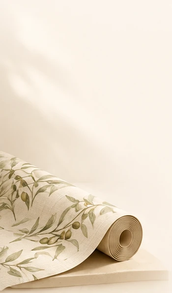
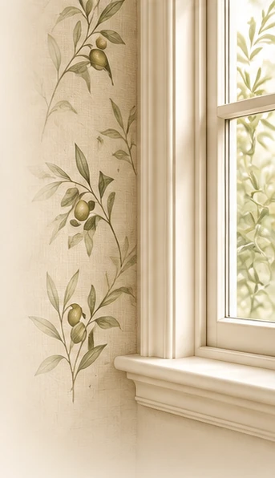
PapelArt & Co. · Duvar kâğıdı uygulaması
Rulo hesabından duvar hazırlığına, desen hizasından temiz teslime kadar her aşamayı biz yapıyoruz. Duvarın fotoğrafını ve ölçüsünü gönderin, iş kapsamını birlikte netleştirelim.
Süreç
Sizden sadece bir fotoğraf ve birkaç bilgi istiyoruz.
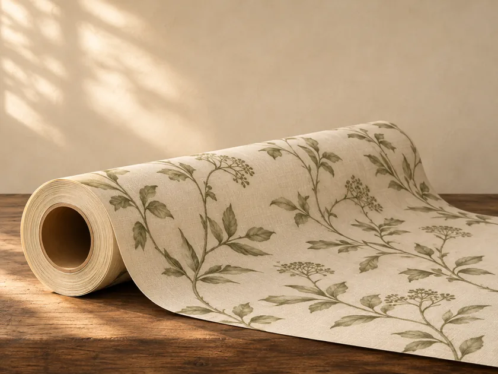
WhatsApp'tan duvarın fotoğrafını, yaklaşık en ve boy ölçülerini, seçtiğiniz kâğıdı ve ilçenizi paylaşın.
Mesaj gönder →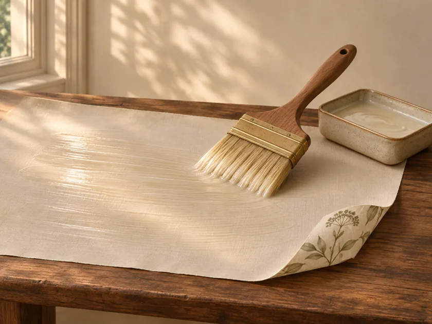
Ölçü ve desen tekrarına göre rulo ihtiyacını, iş kapsamını ve uygulama gününü birlikte belirleriz.
Rulo hesapla →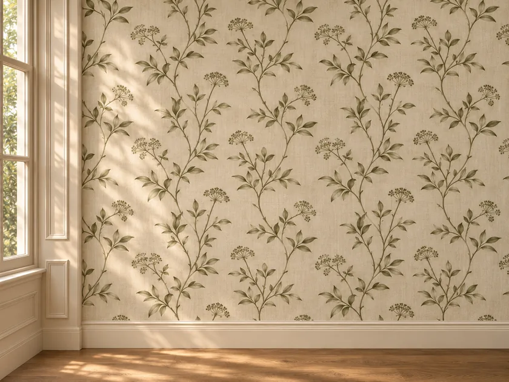
Duvarı hazırlar, kâğıdı desen uyumuna ve ek yerlerine dikkat ederek uygular, çalışma alanını toparlayarak teslim ederiz.
Hizmetlere bak →Görseller temsilidir.
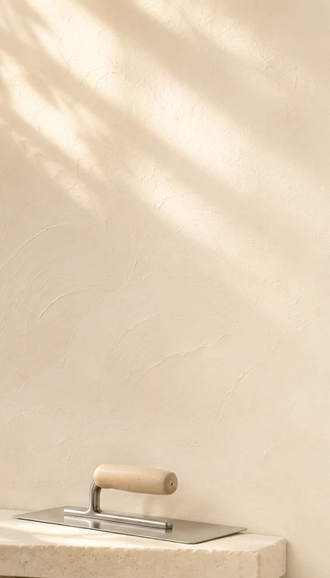
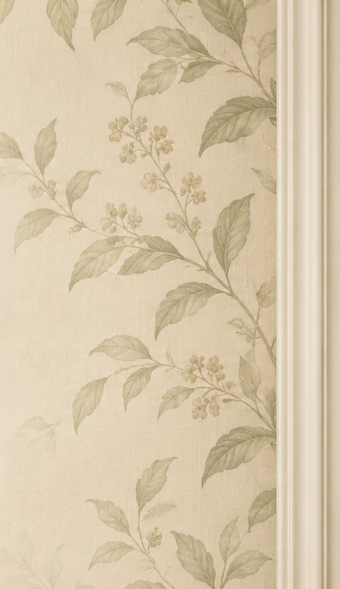
Hizmetler
İhtiyacınıza göre bir ya da hepsi.
Duvar ölçülerini ve desen tekrarını birlikte değerlendirir, uygulama öncesinde ihtiyaç duyulan rulo adedini ve iş kapsamını netleştiririz.
İhtiyaca göre eski duvar kâğıdını söker, yüzeyi kontrol eder; gerekli düzeltme ve astar işlemleriyle duvarı uygulamaya hazırlarız.
Seçtiğiniz kâğıdı desen uyumuna, ek yerlerine ve köşe bitişlerine dikkat ederek uygular, iş sonunda çalışma alanını toparlarız.
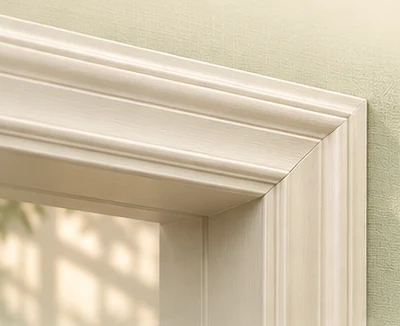
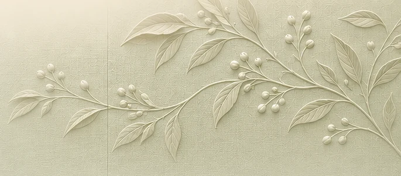
PapelArt & Co.
Proje ve uygulamalarımızda iş birliği yaptığımız seçkin markalar.
Duvar kâğıdı markaları
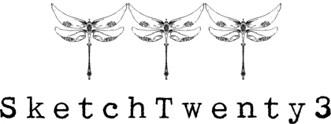
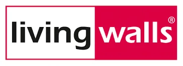
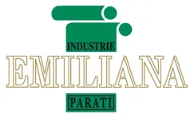
Yapıştırıcılar
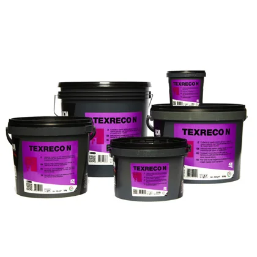
ACM · Texreco/N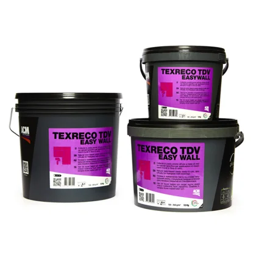
ACM · Texreco Easywall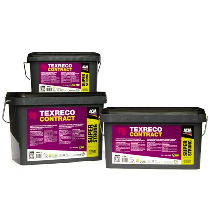
ACM · Texreco Super Strong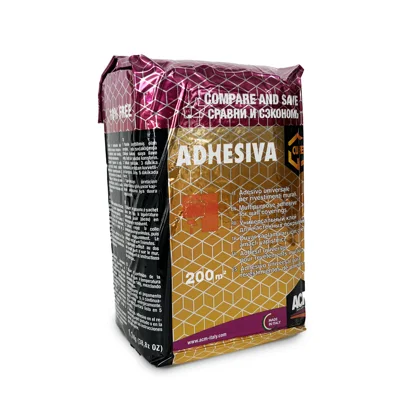
ACM · Adhesiva CubeMarka adları ve logoları ilgili firmalara aittir.
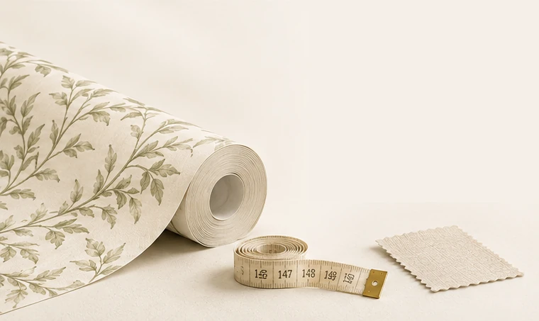
PapelArt & Co.
Uygulama yapacağınız alanın ölçülerini girin, seçtiğiniz duvar kâğıdı için yaklaşık rulo ihtiyacını anında öğrenin.
İlham
Beğendiğiniz görseli seçin, mesajınıza ekleyin.
 Banyo
Banyo
 Klasik desenler
Klasik desenler
 Fresk duvar resmi
Fresk duvar resmi
 Misafir lavabosu
Misafir lavabosu
 Yemek alanı
Yemek alanı
 Oturma alanı
Oturma alanı
 Geometrik doku
Geometrik doku
 Doku yüzey
Doku yüzey
Görseller, desen ve mekân uyumunu göstermek için yapay zekâ ile hazırlanmış temsili çalışmalardır; gerçek uygulama fotoğrafı değildir.
Neden PapelArt
Rulo adedi ve iş kapsamı uygulamadan önce netleşir.
Gerekirse söküm, yüzey kontrolü, düzeltme ve astar.
Desen uyumuna dikkat edilerek uygulanır.
Ek yerleri ve köşeler özenle tamamlanır.
İş sonunda çalışma alanı toparlanır.
WhatsApp'tan fotoğraf gönderin, yazılı bilgi alın.
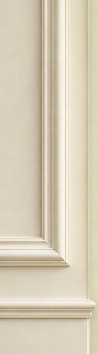
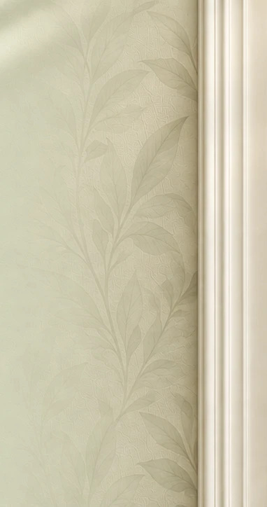
Fiyat
Her duvar farklı olduğu için sabit bir liste yerine fotoğraf ve ölçüye göre bilgi veriyoruz.
SSS
Duvar kâğıdı uygulaması, rulo hesabı ve fiyat hakkında merak edilenler.
Önce duvar temizlenir, eski kâğıt varsa sökülür; çatlak ve pürüzler düzeltilip astar sürülür. Ardından ölçülen şeritler kesilir, yapıştırıcı sürülür, şeritler desen hizasına göre duvara yerleştirilir ve hava kabarcıkları alınır. Ek yerleri ve köşeler en son düzeltilir. Temiz bir sonuç için bu aşamaların usta elinde yapılması önerilir.
Fiyat; uygulanacak alanın büyüklüğüne, eski kâğıdın sökülüp sökülmeyeceğine, duvar yüzeyinin durumuna ve hazırlık ihtiyacına, desen tekrarına ve kâğıt cinsine göre değişir. Sabit bir liste yerine duvarın fotoğrafı ve ölçüsüne göre bilgi veriyoruz; WhatsApp'tan yazmanız yeterli.
Duvarların toplam eni, rulonun eniyle bölünerek gereken şerit sayısı bulunur. Şerit boyu; duvar yüksekliği, desen payı ve kesim payının toplamıdır. Bir rulodan çıkan şerit sayısına bölünce rulo adedi çıkar. Rulo ölçüsü üreticiye göre değişir, bu yüzden kâğıdın etiketindeki ölçüyü kullanın. Hızlı bir tahmin için sitemizdeki rulo hesaplayıcıya bakabilirsiniz.
Desen tekrarı, desenin kendini yinelediği mesafedir. Desenli kâğıtlarda şeritlerin yan yana doğru eşleşmesi için ekstra kesim payı gerekir; bu da aynı duvar için daha fazla rulo gerektirebilir. Desensiz ya da küçük desenli kâğıtlarda bu kayıp daha azdır.
Çoğu durumda eski kâğıdın sökülmesi önerilir; çünkü kabarma, kalkma ve kabartma izleri yeni kâğıda yansıyabilir. Eski kâğıt duvara sağlam yapışmış ve düzgünse karar değişebilir, ancak bunu yüzeye bakmadan söylemek doğru olmaz. Fotoğraf gönderirseniz birlikte değerlendirelim.
Duvar kuru, temiz, toz ve yağdan arınmış ve düzgün olmalıdır. Çatlak ve çukurlar macunla düzeltilir, yüzey zımparalanır ve astar uygulanır. Yeni sıvanmış ya da boyanmış duvarın tamamen kuruması beklenmelidir. Nemli veya küflü duvara kâğıt yapılmaz; önce nem sorunu giderilmelidir.
Uygun ürün seçilirse yapılabilir. Nemli alanlarda silinebilir ve neme dayanıklı olduğu belirtilen kâğıtlar tercih edilmeli, duvarda nem ve küf sorunu bulunmamalıdır. Bir ürünün hangi alana uygun olduğu üreticinin ürün etiketinde yazar. Duvarın fotoğrafını göndererek bizden de görüş alabilirsiniz.
Duvar kâğıdı rulolar halinde, tekrar eden bir desenle gelir ve şeritler yan yana yapıştırılır. Fresk ya da duvar resmi ise tek bir büyük görselin parçalar halinde duvara uygulanmasıdır ve duvarın ölçüsüne göre planlanır. İkisinde de önce duvar ölçüsü ve yüzey durumu değerlendirilir.
Süre; duvarın büyüklüğüne, söküm ve hazırlık ihtiyacına, desene ve kâğıt cinsine göre değişir. Duvarın fotoğrafı ve ölçüsüyle yazarsanız iş kapsamını ve uygulama gününü birlikte netleştiririz.
Duvarın net bir fotoğrafı, yaklaşık en ve boy ölçüsü, bulunduğunuz il ve ilçe, seçtiğiniz kâğıt (model ya da fotoğrafı) ve eski kâğıt olup olmadığı yeterlidir. Bunları WhatsApp'tan yazabilir ya da sayfanın üstündeki hızlı fiyat talebi formunu kullanabilirsiniz.
İstanbul ve çevresinde çalışıyoruz. İlçenizi hızlı fiyat talebi formundan seçebilir ya da mesajla yazabilirsiniz; uygunluğu hızlıca bildiririz.
Evet, iş sonunda çalışma alanını toparlıyoruz.
Yorumlar
Duvar kâğıdı uygulamasında yaşanan deneyimler.
Duvarın fotoğrafını ve ölçüsünü gönderdim, rulo ihtiyacını ve işin kapsamını net şekilde anlattılar. Süreç baştan sona düzenliydi.
Eski kâğıdı söküp duvarı hazırladılar. Desen ek yerlerinde hiç kaymadı, iş bittiğinde ortam toplanmıştı.
WhatsApp'tan yazmam yeterli oldu. Sorularıma anlaşılır cevap verdiler, ne yapılacağını önceden bilmek rahatlattı.
Köşelerdeki ve ek yerlerindeki özen dikkatimi çekti. Duvar sonunda tam hayal ettiğim gibi göründü.
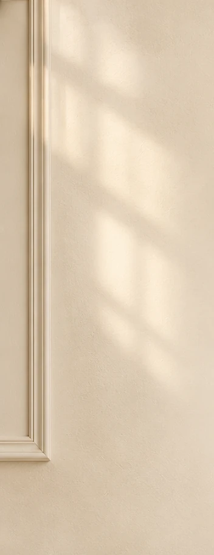
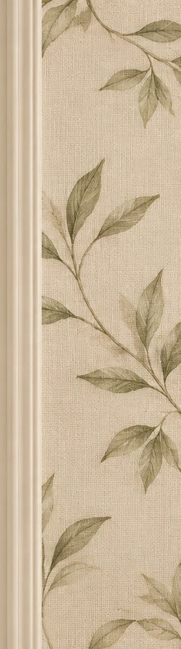
Fotoğrafı ve ölçüyü gönderin, iş kapsamını ve uygulama gününü birlikte netleştirelim.